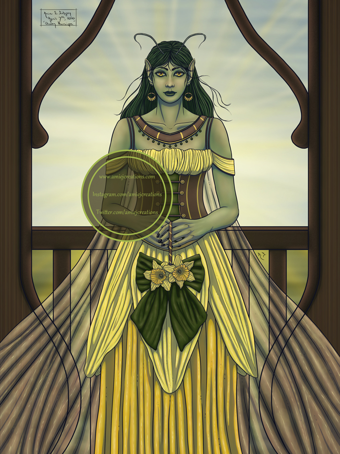

Queen Narcissa
This is Queen Narcissa, Queen of the Daffodil Folk.
(Original painting - 9x12 inches)

Close-up Images
Close-up of the eye, ear, and hair details.

Close-up of the mouth, earring, and hair details.

Close-up of some of the daffodil dress top and sleeve details.

Close-up of the hand details.

Close-up of the daffodil flower details.

Close-up of some of the daffodil petal dress deatails.